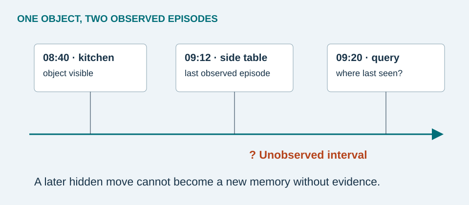

Three outputs that are easy to confuse
| Task | Input and output | What remains unresolved |
|---|---|---|
| Category detection | Image → labeled box, such as “glasses” | Which pair belongs to the user? |
| Instance matching | Enrollment crop + candidate crop → similarity | When was this instance last observed? |
| Episodic retrieval | Query + observation history → last relevant episode | Has the object moved since then? |
Imagine two black wallets in one room. A detector can correctly identify both as wallets while still giving the wrong answer to “Where is my wallet?” Enrollment could associate several user-confirmed photographs with a name such as “brown wallet.” This is a design choice that makes the task more constrained than unrestricted visual search.


VQ2D and VQ3D
A VQ2D response is a response track: bounding boxes across the most recent relevant video interval before the query. VQ3D additionally asks for spatial localization relative to a query camera pose. A correct box alone does not supply a metric distance. [1]
Two ways to search history
CocoFormer: Xu and colleagues condition proposal features on a query and use attention across proposals, rather than scoring every candidate independently. They also address training bias using background frames and proposal sampling. This targets distractors and the frequent absence of the query object. [2]
ESOM: Manigrasso and colleagues separate online memory population from later retrieval. Detection discovers candidates, tracking maintains observations, and the memory stores representations and spatiotemporal information. A query searches that memory instead of reprocessing the entire recording. [3]
Two meanings of “offline”
In research, an offline algorithm can access a complete recording. In this proposed product, offline operation means no Internet connection. A streaming algorithm can operate without Internet. These are separate properties.
Which approach would we choose?
For a small, enrolled collection of important objects, I would begin with a streaming memory and explicit identity confirmation. It limits retained history and makes records inspectable. A retrospective video search is useful when queries were not known during capture and retaining footage is acceptable. Neither choice removes observation gaps or mistaken identity. This recommendation is a design judgment, not a result from a clinical trial.
Pause & explain: Why is the newest video frame not necessarily the answer?
The object may be absent in the newest frame. Retrieval must select its most recent supported episode before the query time, not simply the end of the recording.